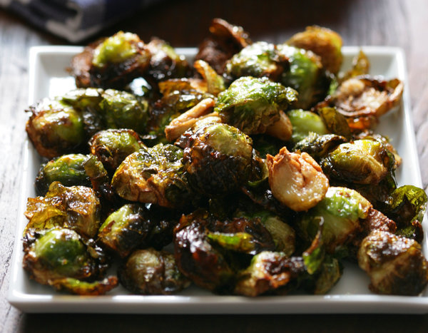

Roasted Brussels Sprouts

- Yield: 4 servings
- Time: 45 minutes
Ingredients
- 1 pint brussels sprouts
- 4-6 tbsp extra virgin olive oil
- 5 cloves garlic
- salt/pepper
- 1 tbsp balsamic vinegar
Preperation
- Heat oven to 400. Trim and slice brussels sprouts.
Heat oil in pan over high heat, then put sprouts cut side down in pan.
Add garlic and sprinkle with salt and pepper.
-
Cook until sprouts begin to brown on the bottom,
then transfer to oven. Roast for about 10 to 20
minutes until sprouts are brown and tender.
-
Taste, add more salt or pepper if necessary.
Stir in balsamic vinegar, and serve hot or warm.